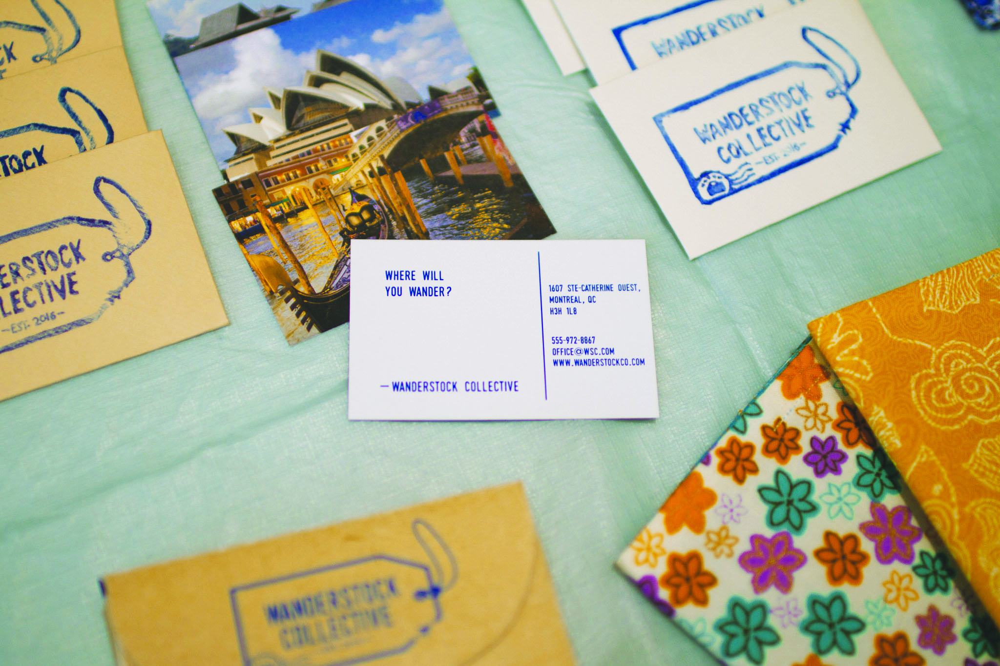
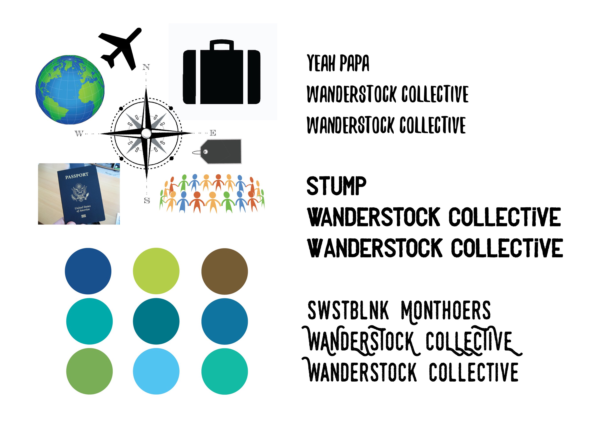
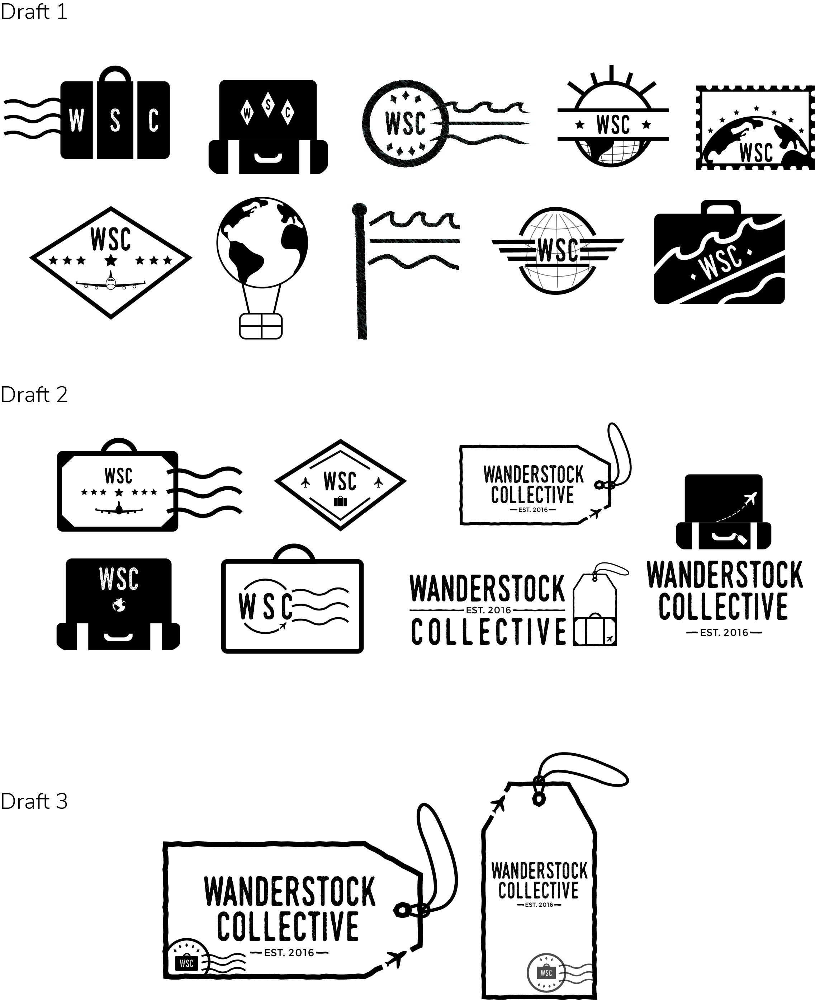

Jan '16 - Apr '16
~ 12 weeks
Adobe Illustrator,
Adobe InDesign
For this project, I was tasked with coming up with a company and creating the branding for it. I was free to create whatever type of company I wanted, so I chose to tackle the travel business. I found that there were very few brands that catered specifically to travel accessories, which made it hard to shop for them and they were often very plain.
I came up with Wanderstock Collective a company that provides trendy travel accessories as well as a monthly postcard subscription service where users could share in their travel stories. Throughout the branding process, I had to keep in mind the three things that embodied the company: travel, community and accessories. The first challenge of branding was coming up with the name. Many suggestions were thrown around, including “Nomadic Stock”, “Odyssean Supply” and “Wanderstock Collective”. Ultimately, “Wanderstock Collective” was chosen as it best represented all the values that the company holds dearly.
I researched travel companies and found that they mostly used shades of blue, green and turquoise. I ended up picking a dark blue with a bright turquoise as the accent color. I wanted to use a display font that had a more outdoorsy, hand-made feel and ended up picking Swstblnk Monthoers. I also created a moodboard to guide my logo development:
The ideas that were explored included the use of suitcases, stamps, globes, planes and flags to represent travel. Some of the globes seemed “too UN” so the second draft’s logos were more focused on the stamp and suitcase concepts. The luggage tag was incorporated to represent the fact that the company sold accessories.
The business cards I created were tiny versions of the postcards with the contact information on the back inside little envelopes stamped with the logo. I hand-stamped each envelope with a stamp I carved myself and folded all the envelopes myself as well.
For the brochure, I created a suitcase that contained a booklet with tabs that were shaped like clothing items. The tabs were changed to have clothing items stamped on rather than cut out to made them less flimsy.
This was my first big branding project and it was a lot of fun but an incredible amount of work. From deciding on type of company to the logo design to stationery and web design, I had my hands full. I was really pushed to think outside the box, especially for the design of the brochure and business card. I learned a couple of new skills too from this project,: since I made the products (luggage tag, passport covers) myself I had to teach myself to sew and I tried linocut for the business card stamps. Full process can be viewed here.